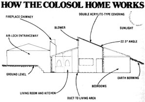

Passive solar and underground housing get together in Dillon, Colorado.
ENERGY SAVER
A few months back, MOTHER received a tip from reader Barry Goldberg about a passive solar, earth-sheltered house set high in the Colorado Rockies . . . near the resort town of Dillon. Barry's description of the building - along with the knowledge that the extreme climate at the village's 9,300-foot elevation would put the energy efficiency of such a shelter to a true test - led one of our staffers to visit its builder, Michael Wiggins . . . who operates an energy-conscious contracting company called Colosol Construction.
Mr. Wiggins' subterranean shelter is located in a small development which sprawls across a high mountain meadow, but the house-with its attractive aboveground garage and entryway on the street side-doesn't appear to be out of place amidst the more conventional vacation cottages. In fact, the "normal" portion of the structure (which encompasses a total of 625 square feet) tends to obscure the low roofline of the earth-sheltered living area behind it ... making the dwelling look like a tiny house with a large garage.
Mike chose to place the floor of the underground portion of the house four feet below the earth's surface . . . to allow for practical septic field drainage on his relatively flat lot. (An eight- to ten-foot-deep excavation-which would have been necessary in order to go completely subterranean - would have involved a tremendous amount of expensive backhoe work.) Then, after the four-foot-deep hole was dug, the removed earth was used to berm the walls which protrude above ground level ... creating a combination underground/earth-bermed structure.
The walls themselves are made of eight-inch-thick concrete . . . with the exception of the long living room bulwark, which is formed from hand-laid rock. All external walls are insulated with four-inch styrofoam for the first two feet, and a twoinch layer of the same material is used everywhere else . . . even beneath the fourinch foundation slab. Furthermore, the rock wall is capped with lumber to avoid forming a heat sink between the earth-bermed wall and the upper air exposure. A total of 95 yards of concrete and 17 tons of rock went into the construction of the building . . . to provide strength and insulation.
Of course - in designing any energy-efficient building - special attention must be paid to the potential heat loss through the roof. In addition, snowy mountain climates pose what can be serious structural problems to buildings with poorly insulated ceilings. Any heating of the rooftop (caused by warmth leaking from the house) can melt the underside of what might - in Colorado's mountains - amount to as much as ten feet of snow . . . causing water to run down to cooler areas and refreeze. The resulting "ice dams" can become so heavy that they are capable of crushing a roof.
To prevent such a disaster - and to save energy - Mike built R-38 fiberglass bat into all the beamed ceilings, and R-40 thermal protection into the flat areas. Then, just to add extra insurance, he designed a ventilation system that circulates outside air underneath the roof and out the eaves. Since the roof went on the building before the snowy winter of 1979, Mike's approach has been well tested and has proved effective.
SUN TEMPERED
Because the Colosol earth-sheltered home employs several solar heat gathering schemes, it belongs to the relatively exclusive group of solar/subterranean hybrids. Though the sun-heat collection system is actually rather modest by aboveground standards, the Colosol building's energy demands are so low that sunlight can provide a significant portion of its heating needs.
The house's primary solar feature is a 14-foot-square atrium located in the center of the dwelling. The peak of this "sunroom" protrudes above the roofline . . . to present a total of 212 square feet of collection surface (glazed with double AcryliteSDP clear), at an angle of 22.5° toward the sun. On clear days the air in the top of the chamber often reaches temperatures of over 100°F. (The black steel beams which brace the frame frequently become even hotter . . . in fact, Michael intends - in the future - to route the domestic hot water supply through the metal tubes for preheating.)
Naturally, the sun-warmed air tends to collect at the top of the atrium, so the builder incorporated a fan to deliver itthrough ductwork-to the living area. The blower system is controlled by a Honeywell thermostat setup which senses the need for, and the availability of, solar heat.
In addition, the atrium also allows an amazing amount of natural light to reach the interior of the dwelling. Not only does direct sunlight fall on the kitchen floor for a few hours around midday, but indirect rays provide enough illumination to preclude the need for artificial light in the living area during daylight hours. In order to transmit as much sunshine as possible, Mike set 15 windows - formed from 28" X 76" and 46" X 76" standard patio door glass - into the sunroom's walls. Moreover, the atrium's five doors can be opened or closed to gain heat during the day and prevent losses at night.
More sunlight is admitted to the earth-sheltered abode by a trio of skylights. Two Zomeworks Skylids are located in a pair of bedrooms, and another lights up the corner of the living room. The solarresponsive covers-controlled by the flow of coolant between two cylinders-open during the day and close at night . . . to take full advantage of the sun's heat without losing warmth after dark.
SUN DOLLARS
As you can see in the photos, the Colosol house has only recently been completed, and was - when MOTHER's representative visited - still up for sale. Fortunately, though no regular occupants can attest to the home's energy efficiency, Mike was curious enough about the success of his concepts to keep track of the power used by the load-limited electric baseboard heaters . . . while he was completing the interior during February of 1979. Even though there were members of the construction crew going in and out of the dwelling regularly, the 2,000-square foot earth-sheltered house consumed only $80 worth of kilowatts for a month's heating. As a comparison, the builder's own well-insulated conventional home - which stands next door - required almost $400 in electricity for the same period.
Perhaps the most remarkable thing about this energy-efficient house is that it didn't sell immediately. At $145,000, its price tag is quite comparable to the cost of standard dwellings in the expensive ski resort area. It seems, though, that -at least in Colosol's vacation marketplace - the buyers are more interested in attractive vistas than in $300 per month energy savings. "Next time," says Michael, "I'll build an earth-sheltered home into the side of a hill . . . to have all this and a salable view, too!"
|
While the colosol structure's garage and air-lock entryway are located aboveground, and the living area is set partially belowground and is partially earth-sheltered. |
the atrium's glazing faces into the sun to catch badly needed high-mountain rays. |
The home's fireplace is recessed into a massive wall consisting of 17 tons of locally collected rock |
|
The atrium admits an amazing amount of light into the inner sanctum of the dwelling. |
One of three Zomeworks Skylids helps to cast natural light into what would have been a dark living room corner. The strings which dangle from the Skylid offer a manual override of the device's solar-activated operation |
 The energy-efficiency of this home depends upon three major features: The heat-saving capabilities of earth-sheltering, the collection of solar warmth through the atrium and skylights, and the retention of heat in concrete, rock, and tile flooring. |